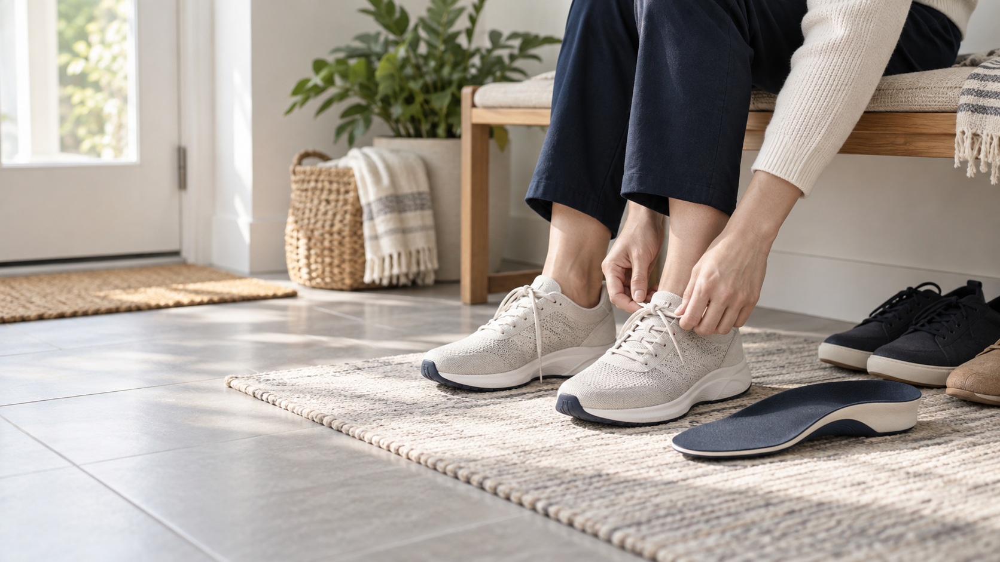
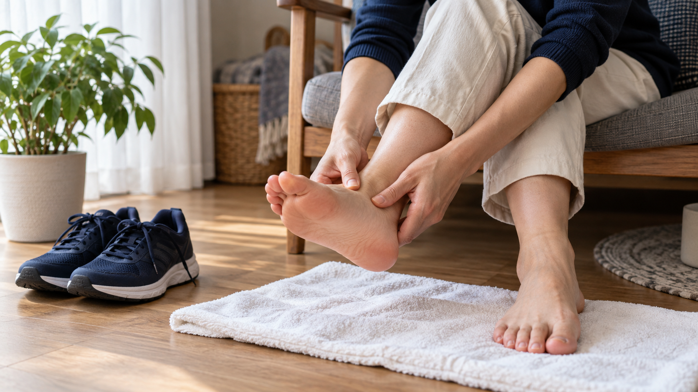
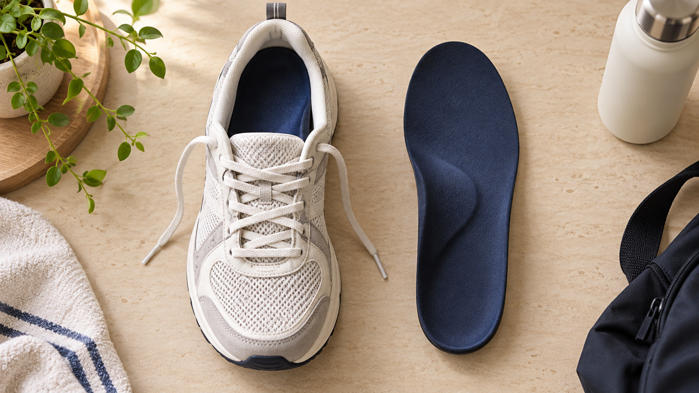
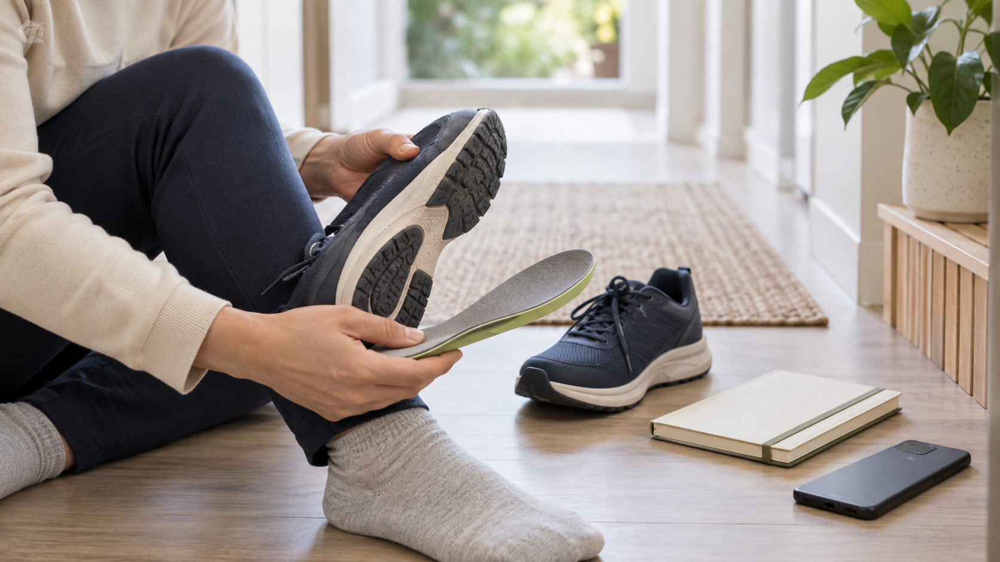

오래 걷거나 서 있을 때 발이 아프고 피곤한데 어떻게 관리해야 할까?
오래 걷거나 서 있을 때 발이 아프다면 휴식과 신발 점검부터 시작하세요.
발의 세로아치와 가로아치를 지지하는 기능성 인솔은 발에 실리는 부담을 나누는 선택지입니다.
체감 시점은 개인차가 있지만, 텔라렌 관련 사용 사례에는 1주일에서 1개월 이내 변화를 느꼈다는 내용이 많습니다.

오래 걸은 뒤 발이 아픈 이유부터 살펴보기
발 통증과 피로는 걸은 거리만으로 결정되지 않습니다. 신발이 발에 맞지 않거나, 밑창이 한쪽으로 닳았거나, 발의 아치가 충분히 지지되지 않아도 발바닥에 부담이 몰릴 수 있습니다. 평소에는 괜찮다가 장시간 걷거나 오래 서 있는 날에만 아프다면 활동량과 신발 상태를 함께 살펴보는 것이 좋습니다.
가장 먼저 할 일은 통증이 있는 날 활동량을 줄이는 것입니다. 집에 돌아온 뒤 신발을 벗고 발을 편하게 쉬게 하세요. 발을 주무를 때는 강하게 누르기보다 불편하지 않은 범위에서 가볍게 풀어 주는 정도가 적당합니다. 통증이 줄어드는지, 다음 날까지 이어지는지 기록해 두면 자신의 패턴을 파악하는 데 도움이 됩니다.

신발과 깔창은 이렇게 점검하세요
신발을 살펴볼 때는 세 가지를 확인하면 됩니다. 발가락이 움직일 공간이 있는지, 발뒤꿈치가 신발 안에서 흔들리지 않는지, 밑창이 한쪽만 심하게 닳지 않았는지입니다. 겉보기에는 멀쩡해도 깔창의 쿠션이 꺼졌거나 뒤꿈치 지지력이 약해졌다면 오래 걸을 때 피로가 커질 수 있습니다.
기능성 인솔은 일반 깔창보다 발의 지지 구조를 고려해 만든 제품입니다. 텔라렌은 발의 세로아치와 가로아치를 함께 지지하는 기능성 인솔을 제조·판매하고 있습니다. 고를 때는 자신의 신발 안에 들어가는지, 발볼과 발등을 지나치게 압박하지 않는지, 걷는 동안 밀리지 않는지를 확인해야 합니다.

기능성 인솔은 얼마나 사용해야 체감할까?
인솔의 체감 시점은 사람마다 다릅니다. 발 모양, 통증의 원인, 하루 활동량, 신발 종류가 모두 다르기 때문입니다. 처음부터 하루 종일 착용하기보다는 짧은 시간부터 시작해 발이 어떻게 반응하는지 살펴보는 편이 안전합니다. 아치가 눌리는 느낌이나 특정 부위의 통증이 계속되면 착용 시간을 늘리지 말아야 합니다.
텔라렌 제품은 OEM 등을 통해 실제 판매된 수량이 100만 개를 넘었습니다. 그만큼 다양한 사용 리뷰가 쌓였고, 리뷰에서 체감 기간도 일정하지 않습니다. 일주일 사용 후 아이가 예전 신발보다 편하다고 했다는 사례가 있는 반면, 한 달 동안 사용하며 발이 편해졌다고 느꼈다는 사례도 있습니다. 등산 뒤 아치와 뒤꿈치의 피로감이 줄었다는 후기, 등산용으로 사용하다 출퇴근 신발에도 넣게 됐다는 후기도 확인할 수 있습니다.
이 사례들은 사용자의 경험이지 모든 사람에게 같은 결과를 보장하는 자료는 아닙니다. ‘며칠이면 반드시 좋아진다’고 단정하기보다 1주일에서 1개월을 관찰 기간으로 두고, 걷는 시간과 발의 불편함이 어떻게 달라지는지 기록하는 방식이 현실적입니다. 텔라렌 상품 사용후기에서 자신과 비슷한 활동 환경의 후기를 찾아보는 것도 방법입니다.
이런 경우에는 제품보다 상담이 먼저입니다
기능성 인솔은 신발 안에서 발을 지지하는 보조 방법입니다. 갑자기 심한 통증이 생겼거나 붓기·저림·감각 이상이 있거나, 쉬어도 통증이 계속된다면 제품 선택보다 진료를 통해 원인을 확인하는 것이 우선입니다. 기존에 발 질환 진단을 받았다면 담당 전문가의 안내를 따르세요.
발 건강 관리는 한 가지 제품으로 끝나는 일이 아닙니다. 활동량을 조절하고, 발에 맞는 신발을 고르고, 필요하다면 지지력을 보완하는 인솔을 천천히 적응해 사용하는 과정이 함께 필요합니다. 지금 신고 있는 신발과 하루 활동량부터 점검해 보면 어떨까요?

자주 묻는 질문
A. 개인차가 있습니다. 텔라렌 관련 후기에는 1주일에서 1개월 이내 변화를 느꼈다는 사례가 있지만, 발 모양과 활동 환경에 따라 적응 기간은 달라질 수 있습니다.
Q. 발이 아프면 무조건 기능성 인솔이 필요한가요?A. 아닙니다. 인솔은 발을 지지하는 여러 방법 중 하나입니다. 통증이 심하거나 지속되면 먼저 원인을 확인하세요.
Q. 처음에는 어떻게 착용해야 하나요?A. 짧은 시간부터 시작해 발의 압박감과 통증 변화를 살펴보세요. 불편함이 계속되면 사용을 중단하고 전문가와 상담하는 것이 좋습니다.
함께 보면 좋은 글: 기능성 인솔 고르는 기준
함께 보면 좋은 글: 발 아치와 보행의 관계
출처: 텔라렌 상품 사용후기, 확인일 2026-09-16